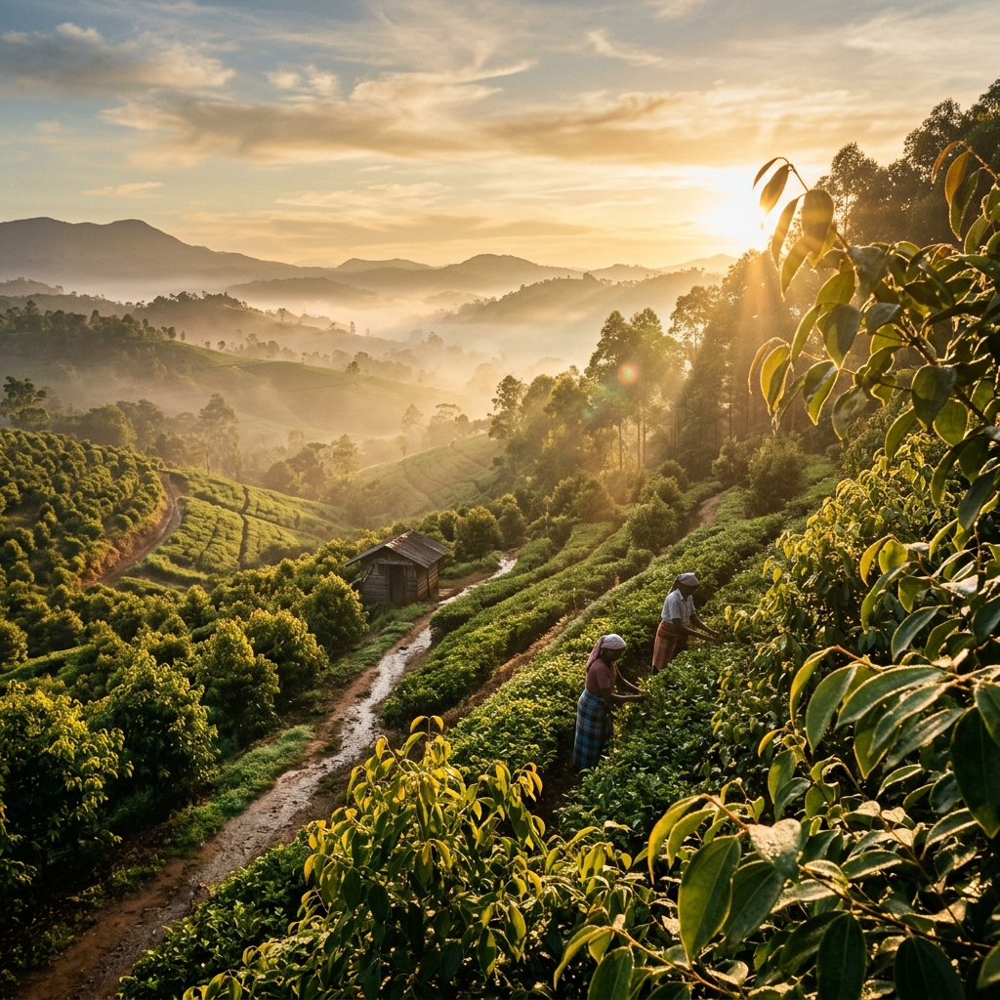
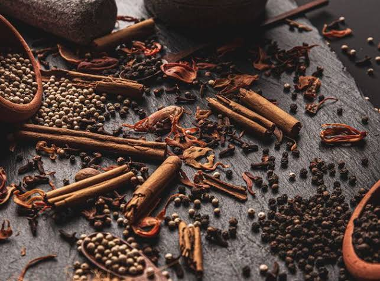
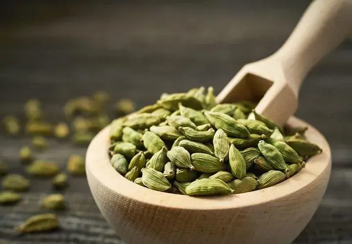

The Essence of Sri Lankan Spices
The Essence of Sri Lankan Spices

Experience the finest collection of authentic Ceylon cinnamon and premium Sri Lankan spices, ethically harvested and processed to capture the pure heritage of our soils.

For centuries, the island of Sri Lanka has been renowned as the cradle of the world's most exquisite spices. At Ceylon Aroma, we carry forward this timeless legacy. We specialize in producing and exporting premium-grade Ceylon Cinnamon, cloves, cardamoms, and black pepper, keeping our practices strictly authentic.
Our farms lie in the rich, volcanic southern soils of Sri Lanka, where the humid tropical climate creates the perfect ecosystem for the finest cinnamon bark to develop its smooth, sweet, and highly aromatic profile.
Discover Our HistoryHarvested at peak ripeness, naturally sun-dried, and completely free from artificial additives, chemicals, or colorings.
Strict triple-phase quality control and sorting processes ensure only the finest Grade-A spices leave our shores.
Reliable logistics networks supplying luxury hospitality brands and premium stores across 50+ countries.
Empowering local farming communities through fair-trade policies and biodiversity-friendly crop rotation practices.

The prized sweet, thin-layered rolls of authentic Sri Lankan cinnamon, carrying low coumarin content.
View Details
Bold and robust thick bark cinnamon, perfect for rich culinary dishes and aromatic blends.
View Details
Aromatic peppercorns handpicked from the lush central hills, known for their spicy, floral heat.
View Details
Highly potent and aromatic hand-selected cloves with rich essential oils, harvested in Kandy.
View Details
Fragrant green pods loaded with sweet, camphorous seeds, harvested from biodiverse hill gardens.
View Details
Vibrant, deep-golden turmeric powder milled from sun-dried premium rhizomes, rich in antioxidants.
View Details